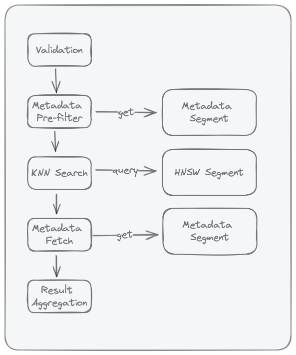

Chroma Queries¶
This page explains what happens after you call get(), query(), or search().
We reuse the same running example from Search Concepts:
- Query intent: "Find troubleshooting docs about SSO login failures."
- Constraints: only
status=published,year >= 2024 - Output goal: top 20 results (
title+score), without one product area dominating.
Core Concepts¶
Modern Rust Chroma has two query execution paths:
- Local single-node (
query()/get()path): local executor overSqlitemetadata + local HNSW segments. - Distributed / Cloud (
search()/ distributed query workers): worker orchestrators over distributed segments (BlockfileMetadata,BlockfileRecord,HnswDistributed,Spann,QuantizedSpann) plus WAL/log materialization.
When a query runs, Chroma pulls from three storage/index families:
| Need | Local single-node | Distributed / Cloud |
|---|---|---|
| Metadata + documents | SQLite tables + FTS5 (where_document) in chroma.sqlite3 |
Blockfile-backed record/metadata segments + recent log materialization |
| Vector ANN | Local HNSW segments (persisted or memory) | HnswDistributed, Spann, or QuantizedSpann (by collection config) |
| Ranking primitives | KNN (query) |
KNN + sparse paths + rank expressions/fusion (search) |
For deeper Rust internals (segment families and Arrow-backed blockfiles), see Concepts and Blockfile Format and Update Model.
Query Pipeline¶
Quick flow:
- Validation: reject malformed requests early.
- Candidate selection: apply filters/IDs to decide which records can compete.
- KNN/rank evaluation: score and order eligible records.
- Field loading (projection/select): fetch the fields you asked for.
- Result aggregation: return final rows in the requested shape.
The same idea in one line: filter -> score -> load fields -> return page.
Query Pipeline?
Why is it called a pipeline? Because each step in the query process depends on its predecessor's output.

Advanced Search Semantics (Cloud + Local)¶
This section explains how query composition works beyond filter syntax.
Stage Model¶
The same query intent is typically expressed as:
- Candidate selection (filters)
- Relevance ranking
- Optional ranking fusion (hybrid)
- Optional grouping/aggregation
- Response shaping (pagination + field selection)
| Stage | What it controls | Local query()/get() |
Cloud Search API |
|---|---|---|---|
| Candidate selection | Which records are eligible | where, where_document |
where(...) |
| Relevance ranking | Order of eligible records | KNN over query embeddings | rank(Knn(...)) or other rank expressions |
| Hybrid fusion | Merge multiple ranking signals | Not available as native query primitive | rank(Rrf(...)) |
| Grouping/aggregation | Per-group diversity and caps | Not available as native query primitive | groupBy(...) (MinK/MaxK) |
| Response shaping | Size and returned fields | limit, offset, include |
limit, pagination, select |
What each stage means:
- Filters decide what gets into the eligible pool.
- Ranking decides what goes first.
- Fusion/grouping decide how to balance quality and diversity.
- Response shaping decides what the client actually gets back.
Boundary Rules¶
- Filters (
where,where_document) define eligibility, not final order. - Ranking defines order among eligible candidates.
- RRF is a rank-fusion step for combining multiple ranked lists.
- Grouping/aggregation reshapes already-ranked results.
- Pagination and field selection shape the final payload.
Practical Tradeoffs¶
- Filter selectivity affects latency: tighter filters reduce the eligible pool before similarity search.
- Ranking depth affects recall and latency: deeper rank windows can improve recall but increase cost.
- Hybrid helps lexical plus semantic intent: use RRF when exact token matches and semantic matches both matter.
- Grouping improves diversity: use group caps when one category can dominate top results.
Example:
- Without grouping, top results might all come from
product_area=auth. - With
groupBy(product_area)and a per-group cap, results are more balanced across areas.
Where to go next¶
- Filters for exact operator syntax.
- Search Concepts for the conceptual pipeline.
- Search API Overview for request composition.
- Ranking and Scoring, Hybrid Search with RRF, and Group By & Aggregation for Cloud behavior details.
Validation¶
The following validations are performed:
- Validate
whereif present - Validate
where_documentif present - Ensure collection exists
- Validate query embeddings dimensions match that of the collection
Common failure patterns:
- typo in filter operator
- querying a collection with incompatible embedding dimensions
- requesting unsupported fields/options for the chosen API path
Metadata Pre-Filter¶
Metadata pre-filter is the first narrowing step for filtered queries.
- In local/single-node Chroma, this stage evaluates
whereandwhere_documentagainst the SQLite metadata segment. where_documentis backed by SQLite FTS5 (embedding_fulltext_search) as documented in Storage Layout.- The output is an eligible ID set passed to the ANN stage; if no filters are provided, this stage is skipped.
Why this matters:
- Executing predicates before ANN search reduces unnecessary distance computations.
- Highly selective filters can reduce latency, but may also reduce the number of final hits if few records satisfy the predicate.
In our running example:
where: {"status":"published","year":{"$gte":2024}}where_document: {"$contains":"SSO"}- Only matching IDs move on to KNN/rank.
Research context:
- Filtered ANN is known to be harder than unfiltered ANN because vector proximity and predicate selectivity can be weakly correlated.
- See ACORN (Patel et al., 2024) and Filtered-DiskANN (Gollapudi et al., WWW 2023) for predicate-aware ANN design tradeoffs.
KNN Search in HNSW Index¶
This stage runs approximate nearest-neighbor search over the collection's HNSW vector index.
- Chroma local stores one HNSW index per collection (see Storage Layout).
- If metadata pre-filter produced eligible IDs, the KNN stage searches within that constrained set.
- If
includerequests embeddings, vectors can be returned as part of this stage.
In our running example:
- Chroma scores the query embedding against only the allowed IDs.
- Lower distance means closer semantic match.
Tuning and tradeoffs:
ef_searchcontrols how many neighbors are explored at query time; increasing it typically improves recall at higher latency/memory cost.- Construction knobs such as
max_neighbors(HNSWM) andef_constructioninfluence graph quality and memory/ingest cost. - Use current index configuration surfaces (
configuration.hnsw/configuration.spann) rather than legacymetadatakeys (see Configuration). - For Cloud's schema-based configuration model (
VectorIndexConfig,HnswConfig,SpannConfig), see Index Configuration Reference and Schema Basics.
Research context:
- HNSW's core idea is hierarchical small-world graph traversal with strong empirical recall/latency tradeoffs (Malkov & Yashunin, 2016/2018).
- For Cloud Search API ranking semantics (distance-style ordering, candidate limits, and expression behavior), see Ranking and Scoring.
Post-Search Field Loading (Projection / Hydration)¶
After KNN returns ranked records (offset_id + score), Chroma loads the requested fields to build the final payload.
- Local single-node path: the local executor performs an explicit follow-up
Getover returned IDs to load documents/metadata when requested. - Distributed/Cloud query path: worker execution uses
ProjectionOrchestrator/KnnProjection(forquery/knn) orSelectinRankOrchestrator(forsearch) to load fields from record segments plus recent logs. - In distributed execution, this is not a SQLite post-query; it is an operator-stage merge of compacted segment data and WAL/log materialization.
What this means:
- Ranking can stay fast because it moves IDs/scores first.
- Field loading happens afterward, only for the rows you keep.
Why this stage exists:
- ANN structures are optimized for vector neighborhood traversal, not full document/metadata row retrieval.
- Decoupling ANN from payload hydration is a common system pattern in vector retrieval pipelines.
Operational guidance:
- Requested fields directly affect this stage cost: keep payload small (
includein local APIs,selectin Cloud Search API) when low latency is important. - For Cloud query composition and output shaping, see Search API Overview and Pagination & Selection.
- For single-node metadata/FTS storage details, see Storage Layout.
Result Aggregation¶
Result aggregation fuses ranked neighbors with hydrated payloads and requested fields into the final response shape.
Example: if your request asks for id, document, and score, this is the stage that combines them into final rows (plus pagination/grouping effects, if configured).